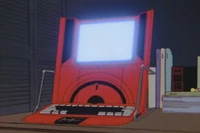

Tachibana General Laboratories
Tachibana Laboratories is the company that created Copland OS, the operating system usually found on HANDINAVI and NAVI devices, such as computers and phones that can be used for Protocol 7. They are infamously known for employing Masami Eiri as Project Director of Protocol 7, up until his untimely death.
